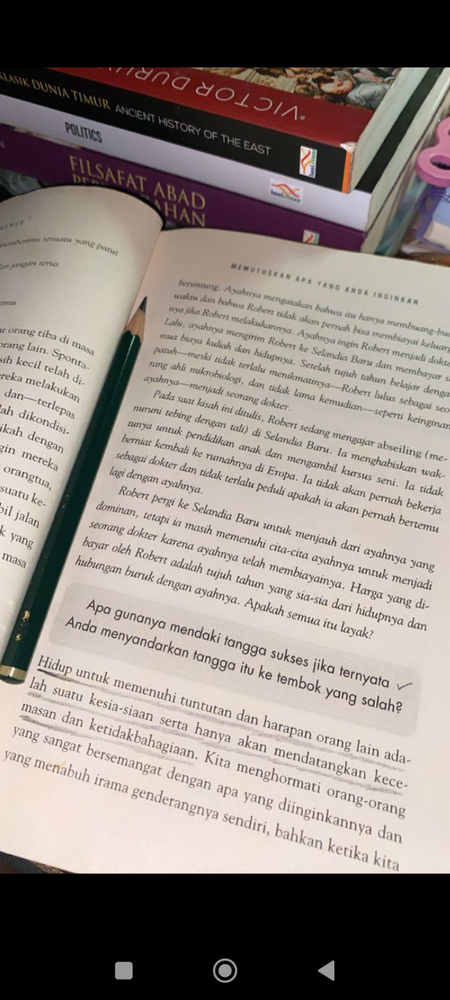

Tentang Saya

Nama saya Aditya Pratama atau biasa dipanggil Adit. Saya berusia 16 tahun dan memiliki
minat yang besar dalam teknologi serta pemrograman web. Saat ini saya sedang mengembangkan keterampilan
di bidang HTML dan CSS untuk berbagai proyek web. saya berusaha memahami konsep desain yang baik, tata letak
yang menarik, dan cara menyajikan konten secara efektif di dalam website. Selain itu, saya berencana mempelajari
bahasa pemrograman lain seperti JavaScript dan PHP untuk memperluas kemampuan saya dalam menciptakan website yang
lebih interaktif. Dengan pengalaman yang saya kumpulkan, saya berharap bisa menjadi web developer profesional dan
menciptakan solusi yang bermanfaat bagi orang banyak di masa depan.
Pendidikan

Saya adalah seorang pelajar smkn9 medan yang sedang menempuh pendidikan dijurusan rpl atau (rekayasa perangkat lunak)
di sekolah menengah atas/menengah kejuruan. Selain belajar di sekolah, saya juga aktif mengikuti kursus online untuk terus
menambah wawasan dan mengasah keterampilan dalam bidang pemrograman. Melalui kursus-kursus ini, saya mendapat kesempatan
untuk memperdalam pengetahuan, mempelajari teknik-teknik baru, serta mengembangkan keterampilan yang berguna bagi masa depan
saya di dunia teknologi. Komitmen saya untuk belajar ini didorong oleh keinginan kuat untuk selalu up-to-date dengan tren
teknologi terbaru, sehingga saya bisa menjadi profesional yang siap bersaing di masa mendatang.
Hobi
Di waktu luang, saya suka coding dan mencoba membuat website atau aplikasi sederhana.
Selain itu, saya juga tertarik dengan fitness dan sering melakukan workout bersama
teman-teman.
Workout
Saya rutin berolahraga streaching atau kelenturan setiap saya bangun tidur atau dipagi hari
dan juga saya hobi lari dan saya sering home workout untuk melatih otot tangan, perut, kaki
dan dada. Ini membantu saya menjaga kebugaran serta kesehatan tubuh.
Membaca Buku

Membaca buku tentang teknologi dan ilmu pengetahuan adalah salah satu hobi favorit saya,
karena membantu saya tetap up-to-date dengan perkembangan di bidang teknologi yang selalu berubah
dan berkembang pesat. Dengan memperkaya wawasan di bidang ini, saya bisa memahami tren terbaru serta
memperdalam pengetahuan dalam teknologi, yang sangat mendukung minat saya dalam pemrograman web dan
bidang terkait.